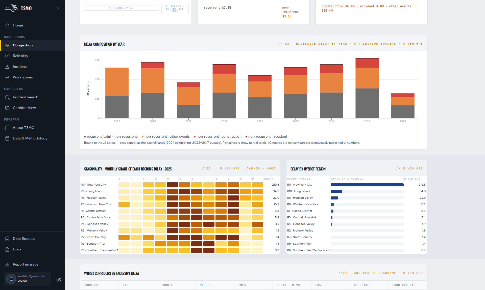

Congestion dashboard.
Excessive delay on New York's monitored roads, split into what recurs every day and what events caused, by year, month, region and corridor, with its dollar cost. What each panel shows, on what basis, and how it is computed.
What this page answers
"How much delay, where, and why." How much time traffic lost in a year, how much recurs every day and how much events added, which months and regions carry it, and which corridors lost the most.
Filters
Year and Region. Blank Region is statewide. See Using the filter bar.
Headline cards
Headline cards under the filter bar carry the year's excessive delay in vehicle-hours with its non-recurrent share, and its cost with recurrent and non-recurrent dollars. Each title names the year and the region, or statewide.
At the June 2026 revision, CY 2025 statewide read 310.86 million vehicle-hours, 51 % of it non-recurrent, and $6.2 billion. The page prices delay at a flat $20 per vehicle-hour. Other pages use a class-weighted rate; see Which pages show which basis.
How it is computed. Excessive delay is time spent travelling slower than the excessive-delay threshold, the greater of 20 mph or 60 % of the posted speed. It is multiplied by the vehicles present in the 5-minute slice and summed to segment and month. See Excessive delay.
Delay composition by year
Stacked bars, one per year, in millions of vehicle-hours. The legend reads: recurrent (all delay not attributed to an event) · non-recurrent, other events · non-recurrent, construction · non-recurrent, accident.
How it is computed. Of the delay on a segment in a month, how much would have happened on an ordinary day, and how much did events add? Recurrent is total minus non-recurrent; non-recurrent is split by the TRANSCOM events that overlap the segment and month. See Delay attribution.
- The grey band is recurrent delay. Its legend entry once read "total − non-recurrent", which read as the opposite; it now says "all delay not attributed to an event".
- The unit, M veh-hrs, is on the vertical axis. The accident band is thin because accident attribution is small in the series.
- Bars appear as years are computed. 2019 and 2020 are a gap. A partial year shows a partial total.
Seasonality · monthly share of each region's delay
A heat grid, one row per NYSDOT region and one column per month, in millions of vehicle-hours. Darker means more. Beside it, Delay by NYSDOT region ranks the regions.
- The colour key is the caption line, darker = more. There is no legend and no value in the cell.
- Cells and region rows are not clickable. Sorting is available on the delay column, not on the month columns.
- The region rows do not sum to the statewide total. See What statewide means.
- At the June 2026 revision, CY 2025: Region 11 219.5 M vehicle-hours, 42 % non-recurrent; Region 6 0.3 M, 95 % non-recurrent. Upstate delay is mostly event-driven.
Worst corridors by excessive delay
A table grouped by road name, ranked in millions of vehicle-hours for the year and region. The Corridor page column holds a view → link to Corridor View. At the June 2026 revision, CY 2025 statewide led with I-278 at 16.0 M, Belt Pky 9.42 M and I-95 8.90 M.
A "drill into a corridor" button was removed in July 2026: Corridor View is county-keyed and could not receive the region.
TMC delay map
The card describes a per-segment map of excessive delay for the selected year. The map is not built; the card carries a placeholder note and, since the July 2026 drill removal, a neutral link to Corridor View.
How delay is measured and attributed
The method note at the foot of the page states the June 2026 revision: thresholds from each segment's posted speed, median baselines, attribution capped at the non-recurrent total, cost at $20 per vehicle-hour. It links to Data & Methodology. Earlier figures used a different method and are not comparable; see Comparability.
Downloads
The dashboard has no download control. On Data & Methodology, under Downloads & API, open data source → leads to the delay-attribution source with a CSV per year. The API card describes key-based access to the same endpoint.

References
- TSMO Congestion dashboard, published 2026-07-31: titles, captions, method note.
- Congestion design header, June 2026 revision: CY 2025 310.86 M vehicle-hours · 51 % non-recurrent · $6.2 B · regions and corridors as quoted.
- TSMO About page: "Congestion — how much delay, where, and why".
- Feedback records 2211340 · 2194780 · 2194998 · 2195004 · 2195005 · 2194849 · 2195006 · 2195637.